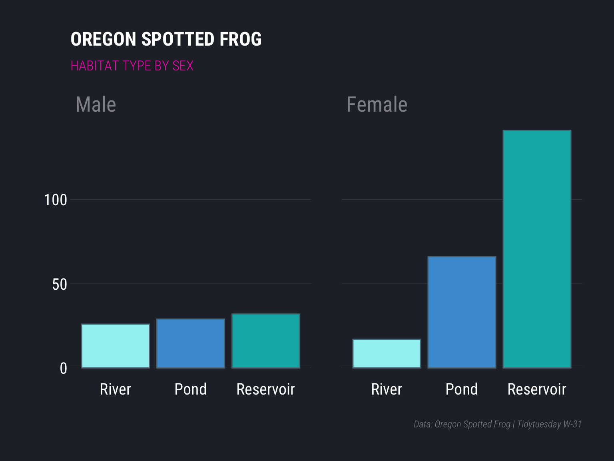

Exploring Oregon Spotted Frog Habitat.
knitr::opts_chunk$set(echo = TRUE)
library(pacman)
p_load(tidytuesdayR,tidyverse, scales, rmarkdown, hrbrthemes)Week-31 tidytuesday data Frog Photo credit
tt <- tt_load("2022-08-02")
Downloading file 1 of 1: `frogs.csv`# Sports categories
tt %>% map(glimpse)Rows: 311
Columns: 16
$ Site <chr> "Crane Prairie", "Crane Prairie", "Crane Prairie"…
$ Subsite <chr> "SE Pond", "SE Pond", "SE Pond", "SE Pond", "SE P…
$ HabType <chr> "Pond", "Pond", "Pond", "Pond", "Pond", "Pond", "…
$ SurveyDate <chr> "9/25/2018", "10/2/2018", "10/9/2018", "10/15/201…
$ Ordinal <dbl> 268, 275, 282, 288, 295, 305, 309, 317, 322, 330,…
$ Frequency <dbl> 164.169, 164.169, 164.169, 164.169, 164.169, 164.…
$ UTME_83 <dbl> 597369, 597352, 597345, 597340, 597344, 597410, 5…
$ UTMN_83 <dbl> 4846486, 4846487, 4846458, 4846464, 4846460, 4846…
$ Interval <dbl> 0, 1, 2, 3, 4, 5, 6, 7, 8, 9, 0, 1, 2, 3, 4, 5, 6…
$ Female <dbl> 0, 0, 0, 0, 0, 0, 0, 0, 0, 0, 0, 0, 0, 0, 0, 0, 0…
$ Water <chr> "Deep water", "Deep water", "Shallow water", "Dee…
$ Type <chr> "Marsh/Pond", "Marsh/Pond", "Marsh/Pond", "Marsh/…
$ Structure <chr> "Herbaceous veg", "Open", "Herbaceous veg", "Wood…
$ Substrate <chr> "Unknown substrate", "Unknown substrate", "Unknow…
$ Beaver <chr> "No beaver", "No beaver", "No beaver", "No beaver…
$ Detection <chr> "Captured", "No visual", "No visual", "No visual"…$frogs
# A tibble: 311 × 16
Site Subsite HabType Surve…¹ Ordinal Frequ…² UTME_83 UTMN_83
<chr> <chr> <chr> <chr> <dbl> <dbl> <dbl> <dbl>
1 Crane Prai… SE Pond Pond 9/25/2… 268 164. 597369 4846486
2 Crane Prai… SE Pond Pond 10/2/2… 275 164. 597352 4846487
3 Crane Prai… SE Pond Pond 10/9/2… 282 164. 597345 4846458
4 Crane Prai… SE Pond Pond 10/15/… 288 164. 597340 4846464
5 Crane Prai… SE Pond Pond 10/22/… 295 164. 597344 4846460
6 Crane Prai… SE Pond Pond 11/1/2… 305 164. 597410 4846451
7 Crane Prai… SE Pond Pond 11/5/2… 309 164. 597369 4846456
8 Crane Prai… SE Pond Pond 11/13/… 317 164. 597341 4846461
9 Crane Prai… SE Pond Pond 11/18/… 322 164. 597348 4846458
10 Crane Prai… SE Pond Pond 11/26/… 330 164. 597350 4846463
# … with 301 more rows, 8 more variables: Interval <dbl>,
# Female <dbl>, Water <chr>, Type <chr>, Structure <chr>,
# Substrate <chr>, Beaver <chr>, Detection <chr>, and abbreviated
# variable names ¹SurveyDate, ²Frequency
# ℹ Use `print(n = ...)` to see more rows, and `colnames()` to see all variable namesf <- tt$frogs;
f |> paged_table()f |> count(HabType, Female)# A tibble: 6 × 3
HabType Female n
<chr> <dbl> <int>
1 Pond 0 29
2 Pond 1 66
3 Reservoir 0 32
4 Reservoir 1 141
5 River 0 26
6 River 1 17plot_df <- f |>
count(HabType, Female, sort=TRUE) |>
mutate(HabType = fct_reorder(HabType, n),
Sex = factor(Female, labels = c('Male', 'Female')))
plot_df |> paged_table()plot_df |>
ggplot(aes(HabType, n, fill = HabType)) +
geom_col(show.legend = F)+
facet_wrap(~Sex)+
labs(y='', x='',
title='OREGON SPOTTED FROG',
subtitle='HABITAT TYPE BY SEX',
caption='Data: Oregon Spotted Frog | Tidytuesday W-31')+
scale_fill_manual(values = c("#a2f1f2", "#489cd4", "#00b4b5")) +
theme_ft_rc(grid = 'Y',
strip_text_size = 20,
caption_face = 'italic',
axis_text_size = 15,
subtitle_face = "bold")+
theme(axis.text = element_text(color = 'white'),
plot.subtitle = element_text(color = '#FF00BF')) -> plot1 plot1
{kind=link}